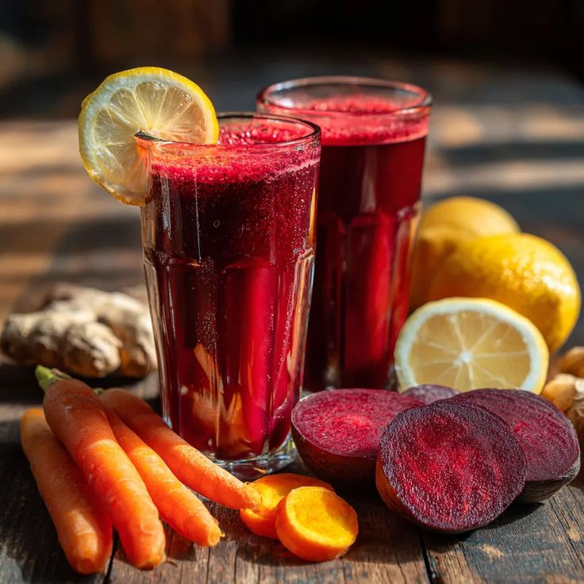
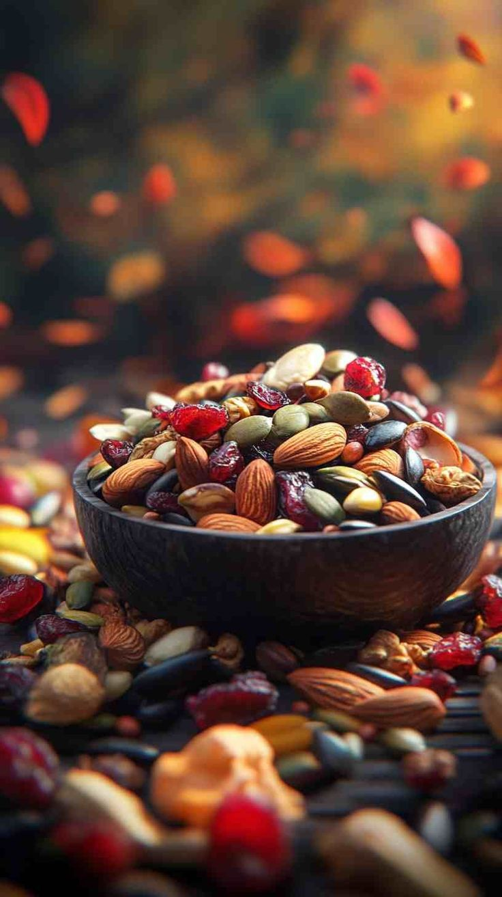

Anemia is a condition in which the body does not have enough healthy red blood cells or hemoglobin to carry oxygen to the body’s tissues. Because of this, a person may feel tired, weak, or dizzy. Common causes include iron deficiency, poor nutrition, blood loss, or certain diseases. Symptoms can include pale skin, shortness of breath, fatigue, and headaches. Eating iron-rich foods like spinach, beans, meat, and fortified cereals can help prevent anemia. Proper treatment depends on the cause and may include diet changes, supplements, or medical care.

